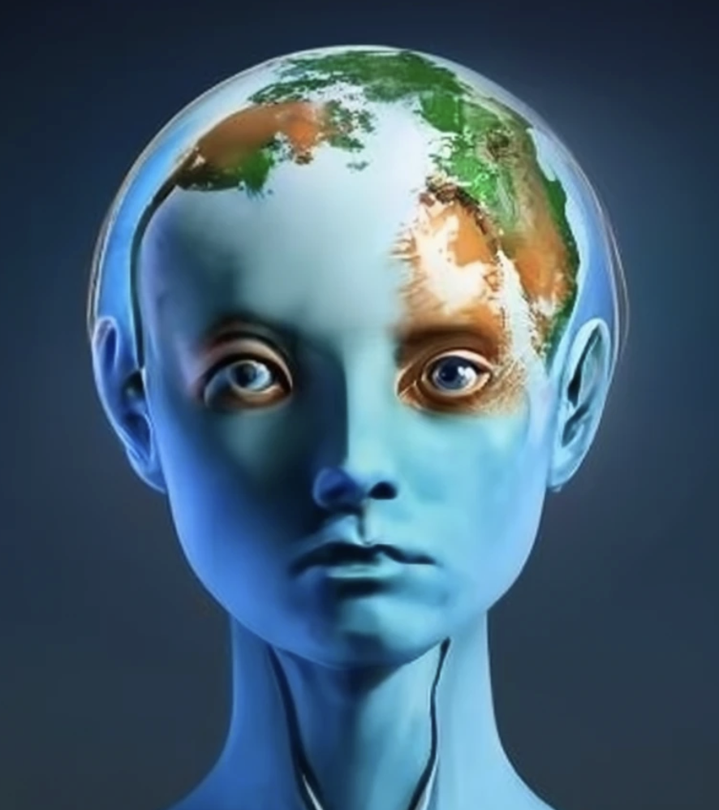

|  |
| Flash Climate Fiction & Memoir |
|---|
Flash fiction or micro fiction is a very short piece of writing that often hints at a larger story.
Typically there is some kind of quick character arc, either movement, emotional journey, or a gaining of awareness. When flash fiction has a climate dimension it may suggest something ominious, though possibly somehow everyday or understated.
For my class assignment I asked the students to wrote pieces that were 500-1000 words. Look at these six examples of climate flash fiction published on professional websites to get an idea of the genre:
• What Are the Flavours We'll Lose - a moment in daily life
• They Were the Years of Fat Water - written looking back from a different climate present
• From Our Bones Will Blossom Coral Kingdoms - another daily life moment
• First Time at Waffle House, as a Hurricane Approaches - still another moment in time
• Waters are Rising - flash fiction with supernatural elements.
I have also had my students write future flash climate memoirs, what psychologists call episodic future thinking. In the face of cliamte change I told my students that the idea for this future flash memoir is for them to explore their own future -- their career, life, friends, family, living situation, activities -- and consider ways they might be caught up in the climate emergency say 20 years from now - 2046? Or, looking backward from 2046 at a revealing moment of climate related action in your life in some prior year. My climate flash memoir assignment.
Here are a few of my students' flash fiction pieces:
Borrowed Time by Andrew Kapchinski
High Tides by Cass Bradford
Mateo by Declan Hunt
November by Anna Lenzini
Regret by Brenda Harvey
The Backyard by Jack Mate
Back Home by Claire Weirick
| Home | AI Writing | More Cli Fi Stories | About Us |